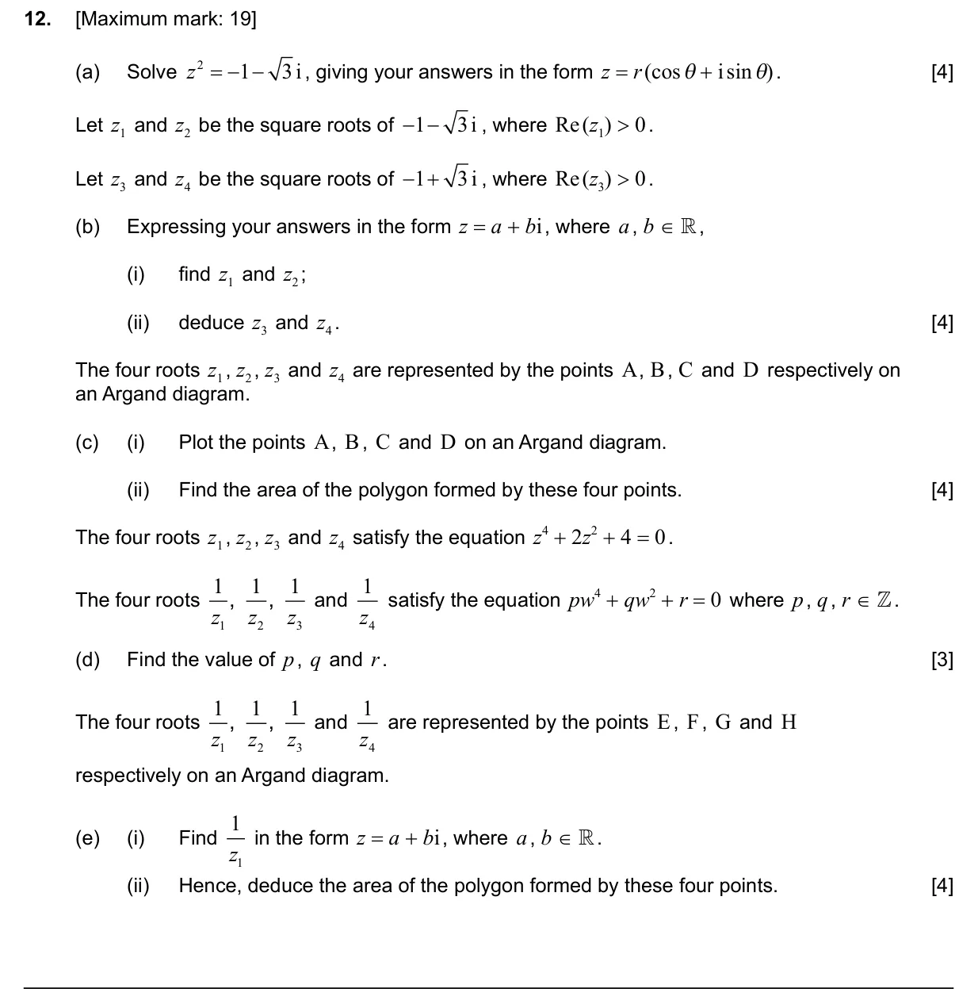
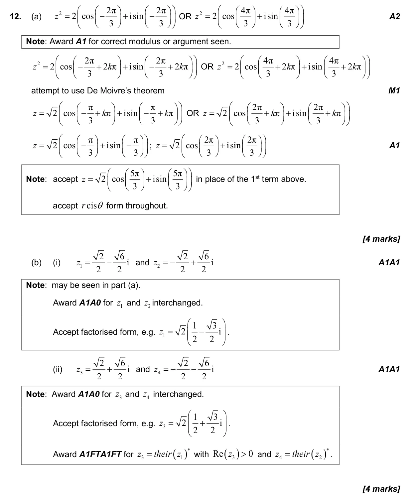
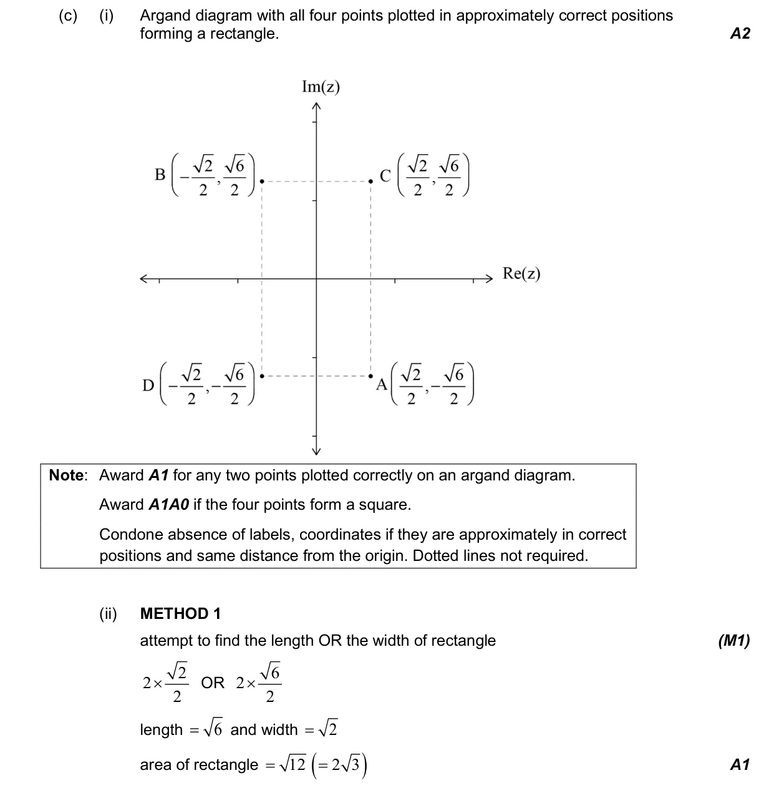
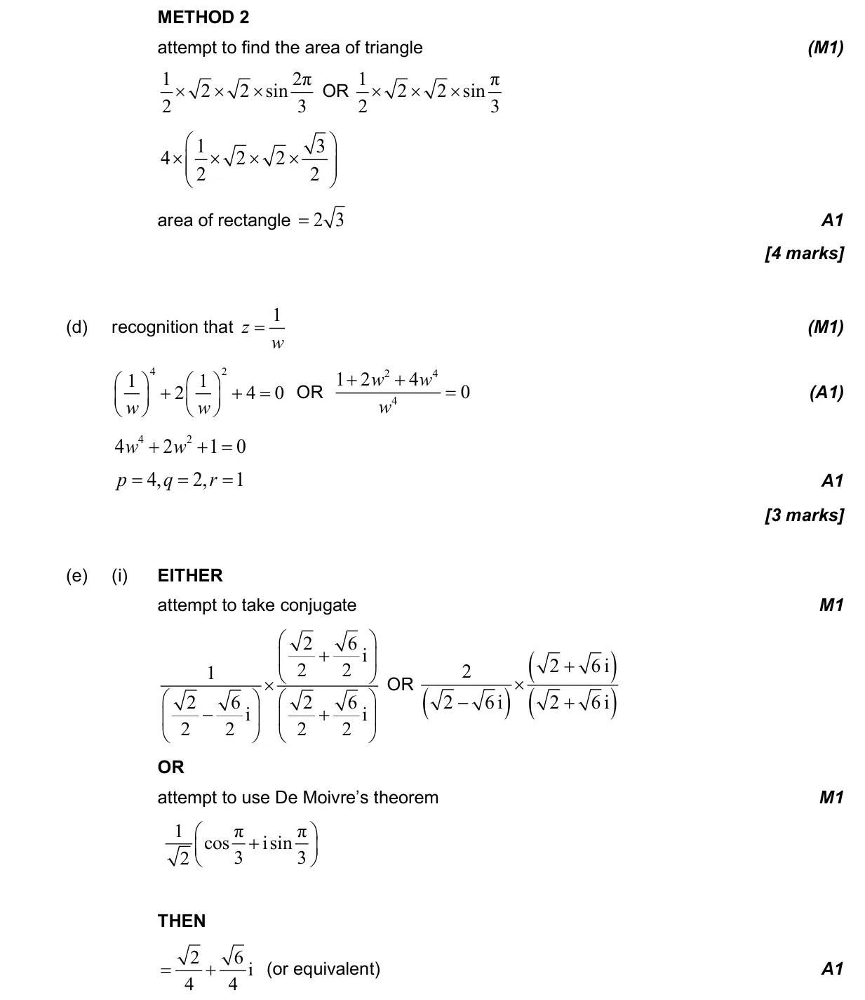
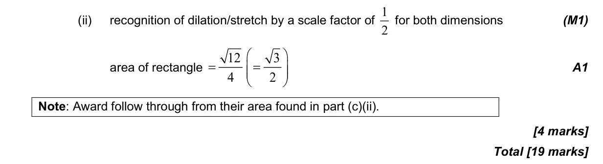

1.13 Modulus-argument and Euler forms of complex numbers1.12 Complex numbers in Cartesian form and the complex plane1.14 Conjugate roots, De Moivre's theorem, powers and roots of complex numbers2.12 Polynomial functions: factor and remainder theorems, sum and product of roots
Question

Markscheme



